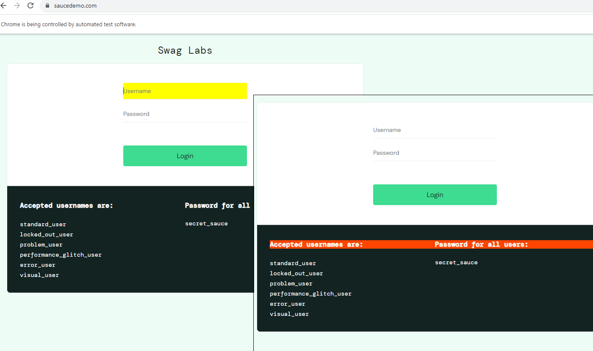

Elad Luz ➜ 058 7731958 › elad.luz@gmail.com » my linkedin |
|
Experienced Functional QA with Test Automation » Ready for my next job |
| Click and download My CV (a document in-which I summarised my relevant QA resume) ➤ Download CV ! |
|
· Click to open same clip on YouTube · |
About Myself
Personal -&- Skills
Personal note
To begin with, I know its a cliché – yet still, I hope that this short & candid introduction, leaves a good impression about myself... 🙂
I'm an Experianced QA, looking for a New Job opportunity, Bringing with me many traits & qualities: ➜
- I'm a certified Professional Software QA, with 17 years hands-on experience Testing Client \ Server (also Linux) Applications.
- Products I worked on, were deployed on varied Platforms with Complex Architectures (including on GCP, with micro-services) ...
👉 Recommenders (former directors, managers & peers) – Available, and would be supplied upon request with advance notice.
Skills & Knowledge
Following set of skills, most relevant for Me as a Functional QA – Test Automation: ➜
- Test Automation - Tech Used Logos (click above, to see All Skills)
| Click and download My CV (a document in-which I summarised my relevant QA resume) ➤ Download CV ! |
Work Experience
06/2023 – 12/2023 | Tzofim ( scouts youth movement ) : QA \ Support (of a Temporary project)
Worked in Tzofim youth movement (IT Data dept.), on a Temp Project of the Parents Portal (see link), as Functional QA & Support.
06/2018 – 07/2022 | Cybereason : Senior Functional QA and UI Test Automation
I Worked on a Cyber Security Defensive EDR-System (aimed to detect & prevent cyber attacks). Product deployed on GCP cloud, with Linux servers & Dockerized microservices, Configured using Consul & Mongo, and its Data stored in Aerospike & ElasticSearch.
I performed both Automation & Functional QA tasks, as part of the Data-infra & HUNT solution Dev-Squad.
Worked in Agile Methodologies (scrum teams & sprints of bite-size features, quick to reach production etc).
- Automation (using Selenium & Java): Automated the Functional E2E Sanity-suite Test-cases, for CI Nightly-run:
- Implement & Automate E2E Test Cases of UI Functionality for Full Coverage, and add relevant Page elements to INFRA
- Execute & Monitor the Jenkins Nightly job, and Run Test suite on-demand, upon each Sanity Cycle & Check any Failure
- Functional (working with JIRA): Performed all Manual QA tasks of the Hunt-Investigation UI solution:
- Review Features' Design and Requirements (with stakeholders: Product, Data Architect, UX & Developers)
- Design Test Plan with Functional E2E Test Cases (STP \ STD) for full Coverage of Spec docs (SRD \ SRS)
- Execution of – Sanity (before production), Progression (for each new feature) & Regression testing cycles
- Failure Analysis of issues found, Open Bugs, Validate Fixes & Conclude Results in Status Report (STR)
- Deploy Environments (GCP \ Linux VMs), Configure (in Consul), integrate (with Docker microservices)
- Knowledge Transfer to Train new employees, Wrote How-to Wikis on a shared location (Confluence)
👉 Recommenders (former directors, managers & peers) – Available, and would be supplied upon request, with advance notice.
👔 EXTRA: Software QA Engineering Jobs I previously held - prior to 2018: ➜
|
click below & watch my automation clip |
Education
Technical & Academic qualifications (by graduation years)
📝 COURSES: Took many relevant technical courses - Lately, focused on Automation: ➜
Portfolio
| Click and download Saucedemo Test Plan (excel on which project was automated by) ➤ Download Test Plan ! |
| Click and open my Github, to inspect My Automation Code on the following repositoty ➤ Saucedemo 3 Repos: |
So Please..., Feel Free to
inspect each of the 3 UI Automation Test Repositories ReeadMe file -and- Code in general...
Note, there is also anothe repo with
Testing API with java -&- restassured !
My Automation Project : Major Focus is on Repo: selenium-java-saucedemo (see the readme file):
I did this Automation Project to expose my capabilities, so I could present a show-case of
my approach and coding skills.
I used SauceDemo.com for my tests - a lean
website, built by Sauce Labs, for students automation practice.
Important: Although pages & test-cases are fairly simple, I sometimes took it
up a notch & deliberately wrote complex code.
I could have refined my code to simplify it - But I wanted to show some complexity on purpose.
- This Automation Project Includes:
- Automation Infrastructure include: Java, Selenium, Page Object Model, Base Page, PageFactory, Utilities & Data-Source.
- Automation Testing Infras include: TestNG, Base Test, Test Classes, Maven & Allure-reports.
- Testing Cases (scenarios): Download SauceDemo TestPlan excel – each Test Case mapped to a related Test Method...
- Video of Project DEMO (e2e) as local RUN:
- Print Screens of Local Run
- The Next Step of this project, would be to get all test classes running vie a Jenkins job, while making use of Selenium Grid infra...
Please play below video-clip in Full-Screen on High-Res Full HD
| Starting to run : | During test run : | Generate Report : | Drill to Failure : |
|  |
Hobby
Growing Bonsai
Bonsai is the Japanese ART of Growing Miniature Trees in Pots.
It is a delicate art-form which implements various techniques, to produce a natural-looking tree in a small pot – one that attempt to mimic the shape of a large scale real-life tree, and that look as if it just happened to grow that way Naturally.
Practice growing Bonsai, is a Meditation – during the process of contemplation, you must pay attention to tree examples you appreciate, while trying to emulate them to the best you can.
The objective is to craft a tree, that not only looks like nobody worked on it -but- also possesses the elusive character of 'Beauty'.
Since young age, I always dreamed of growing Bonsai... As life progressed, my mind settled, till finaly I possessed the inner-patience needed, and I started Learning this craft online – in The Bonsai Zone, and started My Collection of Trees.
Each passing year, as I progressed, It got more and more fascinating. And, and as my plants started taking shape, a rewarding-feeling came – it is totally worth the effort – see below photos, of my litle porch bonsai garden:
| Knowlage Center |